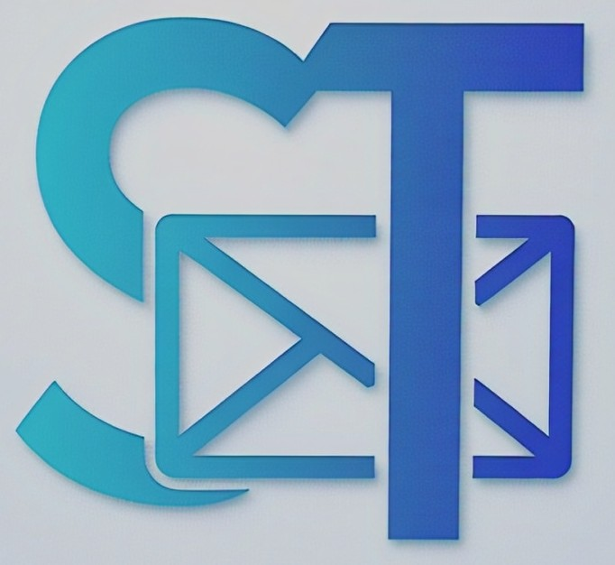

ST-Mail is a modern email client developed by SoftTech, offering a fast, secure, and intuitive communication experience for both personal and professional users. Built with productivity in mind, ST-Mail simplifies your inbox while boosting your email management efficiency.
Key features of ST-Mail include:
Whether you're a business professional, student, or freelancer, ST-Mail keeps you connected, organized, and secure. Experience hassle-free communication, powered by SoftTech innovation.